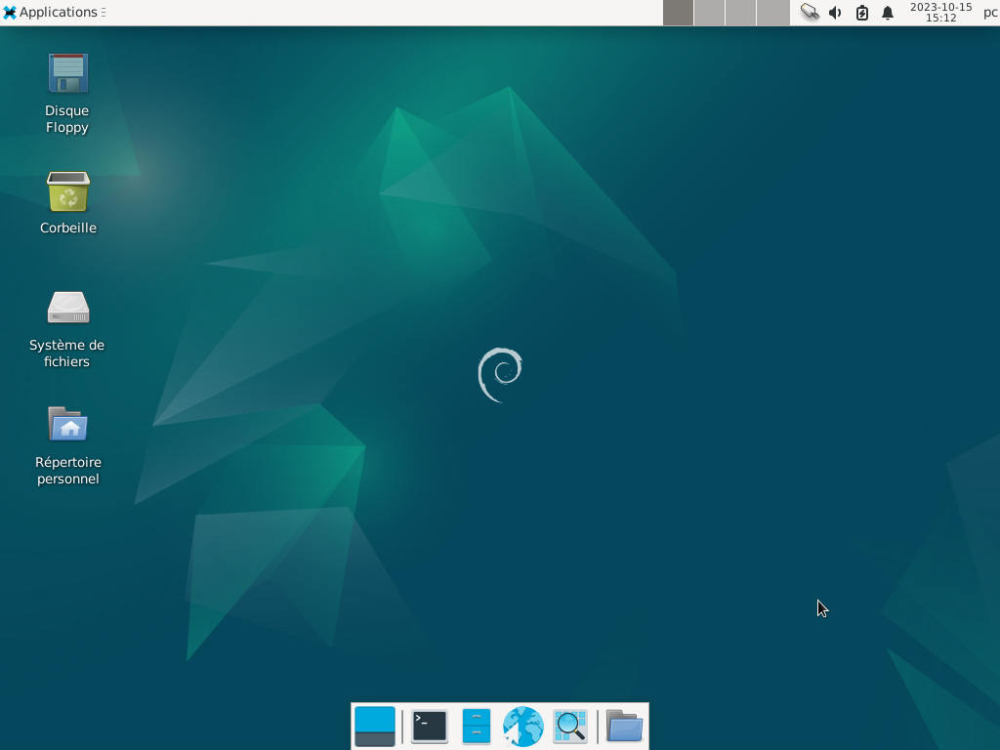
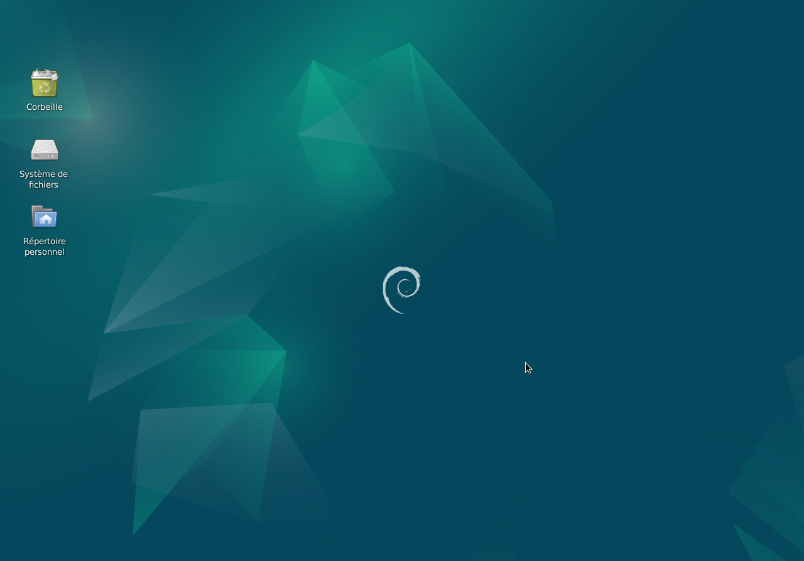

&
Environnement de bureau Xfce : Le site Xfce.
Xfce est un ensemble de programmes qui fournit un environnement de bureau complet. Il est peu gourmand en ressources système, tout en étant visuellement attrayant et convivial.
Après l'installation, le bureau est configuré comme ci-dessous.
Mais il peut être configuré de la façon que l'on souhaite.
Nota : Dans cet exemple le PC est équipé d'un lecteur de disquette, l'icône "Disque Floppy" apparaît.

Nota : Dans cet exemple le PC n'est pas équipé d'un lecteur de disquette, l'icône "Disque Floppy" n'apparaît pas.

L'environnement de bureau Xfce se compose :




Informations sur le logiciel libre et Merci.
Marques déposées :
Ce site ne fait pas partie de Debian, n'est pas produit par le projet
Debian, ni approuvé par le projet Debian.
Ce site n'est pas affilié à Debian. Debian est une marque déposée appartenant
à Software in the Public Interest, Inc.
Contribuer :
Ce site ne fait pas partie de XFCE, n'est pas produit par le projet
XFCE, ni approuvé par le projet XFCE.
Ce site n'est pas affilié à XFCE.
Ce site est juste réalisé par un passionné.